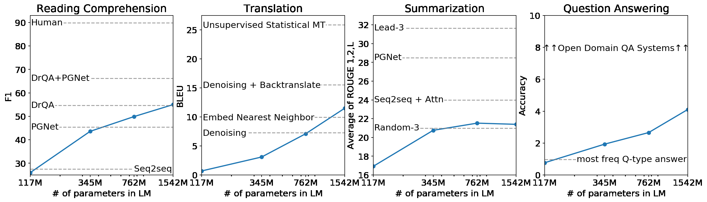
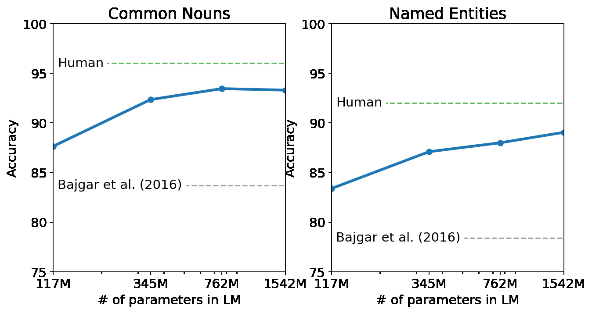
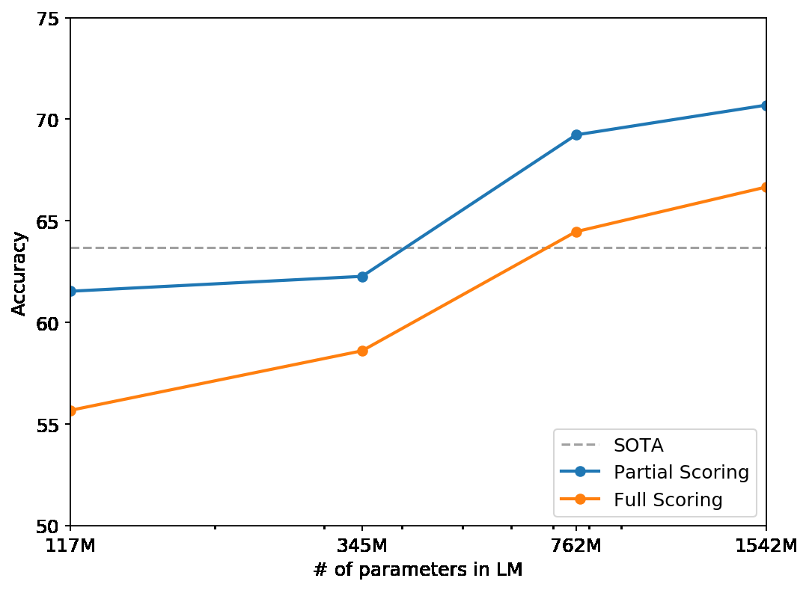

機械学習システムは、大規模データセット、高容量モデル、教師あり学習を組み合わせ、訓練対象のタスクでは現在、期待値として優れた性能を示す（Krizhevsky et al., 2012; Sutskever et al., 2014; Amodei et al., 2016）。しかし、データ分布のわずかな変化（Recht et al., 2018）やタスク仕様の変化（Kirkpatrick et al., 2017）に脆い。現在のシステムは有能な汎用型というより、専門範囲の狭い専門家と表現する方が適切である。多くのタスクを実行でき、最終的には各タスクの訓練データを手作業で作成・ラベル付けする必要のない、より汎用的なシステムを目指したい。
機械学習システムを作る主流の方法は、目的のタスクに対する正しい振る舞いを示す訓練例を集め、その振る舞いを模倣するようシステムを訓練し、独立同分布（IID）の未使用例で性能を評価するというものだ。この方法は狭い専門家の進歩に役立ってきた。しかし、可能な入力の多様性に直面した際の画像説明モデル（Lake et al., 2017）、読解システム（Jia & Liang, 2017）、画像分類器（Alcorn et al., 2018）のしばしば不安定な振る舞いは、この方法の限界を浮き彫りにする。
現在のシステムに見られる汎化能力の不足には、単一領域のデータセットによる単一タスク学習が広く使われていることが大きく寄与していると考える。現在のアーキテクチャで頑健なシステムに近づくには、幅広い領域とタスクで学習し性能を測定する必要があるだろう。その研究を始めるため、GLUE（Wang et al., 2018）や decaNLP（McCann et al., 2018）などのベンチマークが最近提案された。
マルチタスク学習（Caruana, 1997）は汎用性能を改善する有望な枠組みだが、自然言語処理でのマルチタスク訓練はまだ初期段階にある。最近の研究では性能向上は限定的であり（Yogatama et al., 2019）、これまでで最も意欲的な2つの取り組みも、それぞれ合計10組と17組の「データセットと目的関数」の組で訓練している（McCann et al., 2018; Bowman et al., 2018）。メタ学習の観点では、各組はデータセットと目的関数の分布から抽出された1つの訓練例である。現在の機械学習システムは汎化する関数を導くために数百から数千の例を必要とする。したがって、現在の方法でマルチタスク学習の可能性を実現するには、同じ程度の数の有効な訓練ペアが必要かもしれない。現在の技術で力任せに達成するために必要な規模まで、データセットの作成と目的関数の設計を拡大し続けることは非常に難しい。そこでマルチタスク学習を行う別の設定を探究する。

図1. WebText 言語モデルの規模と、多様な自然言語処理タスクにおけるゼロショット性能。読解は CoQA（Reddy et al., 2018）、翻訳は WMT-14 仏英（Artetxe et al., 2017）、要約は CNN / Daily Mail（See et al., 2017）、質問応答は Natural Questions（Kwiatkowski et al., 2019）。詳細は第3節を参照。
現在、言語タスクで最高性能を示すシステムは事前学習と教師ありファインチューニングを組み合わせる。この方法には長い歴史があり、より柔軟な転移へと発展してきた。まず単語ベクトルを学習してタスク固有のアーキテクチャへの入力とし（Mikolov et al., 2013; Collobert et al., 2011）、次に再帰型ネットワークの文脈表現が転移され（Dai & Le, 2015; Peters et al., 2018）、最近の研究はタスク固有のアーキテクチャは不要で、多数の自己注意ブロックの転移で十分だと示唆している（Radford et al., 2018; Devlin et al., 2018）。これらの方法はタスクを実行するためになお教師あり学習を必要とする。一方、教師ありデータが最小限または皆無の場合でも、常識推論（Schwartz et al., 2017）や感情分析（Radford et al., 2017）などの特定タスクを言語モデルが実行できる可能性を、別の研究の流れが示している。
単一タスクの学習は、確率的枠組みでは条件付き分布 p(出力 | 入力) の推定として表せる。汎用システムは同じ入力に対しても多くの異なるタスクを実行できる必要があるため、入力だけでなく実行すべきタスクも条件とし、p(出力 | 入力, タスク) をモデル化する必要がある。これはマルチタスク学習やメタ学習の設定でさまざまに定式化されている。タスクの条件付けは、Kaiser et al. (2017) のタスク固有のエンコーダとデコーダのようにアーキテクチャのレベルで、あるいは MAML（Finn et al., 2017）の内側・外側ループによる最適化のようにアルゴリズムのレベルで実装されることが多い。しかし McCann et al. (2018) が例示したように、言語を用いればタスク、入力、出力をすべて記号列として柔軟に指定できる。例えば翻訳の訓練例は「フランス語に翻訳、英語テキスト、フランス語テキスト」、読解の訓練例は「質問に答える、文書、質問、回答」と書ける。McCann et al. は、MQAN という単一モデルを訓練し、この形式の例から多様なタスクを推測・実行できることを示した。
原理上、言語モデリングでも、どの記号が予測対象の出力なのかを明示的に教えなくても McCann et al. のタスクを学習できる。教師あり目的関数は教師なし目的関数を系列の一部分だけで評価したものなので、教師なし目的関数の大域的最小値は教師あり目的関数の大域的最小値でもある。このやや単純化された設定では、原理に基づく学習目的としての密度推定に関して Sutskever et al. (2015) が論じた懸念を回避できる。問題は代わりに、実際に教師なし目的関数を収束まで最適化できるかどうかになる。予備実験では、十分に大きい言語モデルはこの単純化された設定でマルチタスク学習を実行できるが、明示的な教師あり学習よりはるかに遅いことが確認された。
従来の研究の多くは、ニュース記事（Jozefowicz et al., 2016）、Wikipedia（Merity et al., 2016）、小説（Kiros et al., 2015）のような単一領域のテキストで言語モデルを訓練した。本手法では、できるだけ多様な領域と文脈における自然言語のタスク実例を収集するため、可能な限り大規模で多様なデータセットを構築する。
多様でほぼ無尽蔵のテキスト源として Common Crawl のようなウェブ収集データが有望である。こうしたアーカイブは既存の言語モデル用データセットより何桁も大きい一方、データ品質に重大な問題がある。Trinh & Le (2018) は常識推論の研究で Common Crawl を使ったが、「内容が大部分理解不能な」文書が大量に存在すると指摘した。我々も初期実験で同様の問題を観察した。Trinh & Le の最良の結果は、対象データセットである Winograd Schema Challenge に最も似た文書だけを含む Common Crawl の小さな部分集合で得られた。特定タスクの性能改善には実用的な方法だが、実行するタスクについて事前に仮定することは避けたい。
表1. WebText の訓練データ中に自然に現れた英仏・仏英翻訳の実例。
「私は世界で一番賢い人間ではないが、フランス語で言うように Je ne suis pas un imbécile［私はばかではない］」
現在削除された8月16日の投稿で、ジョリエット選挙区の保守党候補 Soheil Eid はフランス語で「Mentez mentez, il en restera toujours quelque chose」と書いた。訳すと「嘘をつけ、嘘をつけ、何かは必ず残る」。
こじつけに聞こえるなら、フランス語の質問「As-tu aller au cinéma?」を考えてほしい。「映画に行った？」という意味で、字義どおりには「あなたは映画館に行くことを持っている？」となる。
「Brevet Sans Garantie Du Gouvernement」：英訳は「政府による保証のない特許」。
表1の英語・フランス語の原文例
“I’m not the cleverest man in the world, but like they say in French: Je ne suis pas un imbecile [I’m not a fool].
In a now-deleted post from Aug. 16, Soheil Eid, Tory candidate in the riding of Joliette, wrote in French: ”Mentez mentez, il en restera toujours quelque chose,” which translates as, ”Lie lie and something will always remain.”
“I hate the word ‘perfume,”’ Burr says. ‘It’s somewhat better in French: ‘parfum.’
If listened carefully at 29:55, a conversation can be heard between two guys in French: “-Comment on fait pour aller de l’autre côté? -Quel autre côté?”, which means “- How do you get to the other side? - What side?”.
If this sounds like a bit of a stretch, consider this question in French: As-tu aller au cinéma?, or Did you go to the movies?, which literally translates as Have-you to go to movies/theater?
“Brevet Sans Garantie Du Gouvernement”, translated to English: “Patented without government warranty”.
汎用的な言語モデルは任意の文字列の確率を計算し、文字列を生成できる必要がある。現在の大規模言語モデルには小文字化、トークン化、語彙外トークンなどの前処理が含まれ、モデル化できる文字列の範囲が制限される。Gillick et al. (2015) などが示すように Unicode 文字列を UTF-8 バイト列として処理すればこの要件を簡潔に満たせるが、現在のバイト単位言語モデルは One Billion Word Benchmark のような大規模データセットでは単語単位言語モデルに及ばない（Al-Rfou et al., 2018）。WebText で標準的なバイト単位モデルを学習する試みでも同様の性能差を観察した。
言語モデルには Transformer（Vaswani et al., 2017）に基づくアーキテクチャを使う。基本的には OpenAI GPT（Radford et al., 2018）の設計に従い、いくつか変更した。層正規化（Ba et al., 2016）を、事前活性化型残差ネットワーク（He et al., 2016）と同様に各サブブロックの入力側へ移し、最後の自己注意ブロックの後に層正規化を追加した。モデルの深さに伴う残差経路上の累積を考慮した初期化を使い、残差層の重みを初期化時に 1/√N 倍する。N は残差層の数である。語彙を50,257に拡大し、文脈サイズを512から1,024トークンに増やし、バッチサイズはより大きい512とした。
表3. 多様なデータセットに対するゼロショット結果。いずれも対象データでの訓練やファインチューニングは行っていない。PTB と WikiText-2 は Gong et al. (2018)、CBT は Bajgar et al. (2016)、LAMBADA の正解率は Hoang et al. (2018)、同パープレキシティは Grave et al. (2016)、その他は Dai et al. (2019) による既存最高値。PPL はパープレキシティ、ACC は正解率、BPB はバイトあたりビット数、BPC は文字あたりビット数。
モデル
LAMBADA PPL
LAMBADA ACC
CBT-CN ACC
CBT-NE ACC
WikiText-2 PPL
PTB PPL
enwik8 BPB
text8 BPC
WikiText-103 PPL
1BW PPL
既存最高
99.8
59.23
85.7
82.3
39.14
46.54
0.99
1.08
18.3
21.8
117M
35.13
45.99
87.65
83.4
29.41
65.85
1.16
1.17
37.50
75.20
345M
15.60
55.48
92.35
87.1
22.76
47.33
1.01
1.06
26.37
55.72
762M
10.87
60.12
93.45
88.0
19.93
40.31
0.97
1.02
22.05
44.575
1542M
8.63
63.24
93.30
89.05
18.34
35.76
0.93
0.98
17.48
42.16
WebText 言語モデルは領域やデータセットを越えてよく転移し、8つのデータセットのうち7つでゼロショット設定の既存最高性能を更新した。学習用トークンが100万〜200万しかない Penn Treebank や WikiText-2 のような小規模データセットで大きな改善が見られた。LAMBADA（Paperno et al., 2016）や Children’s Book Test（Hill et al., 2015）のように長距離依存の測定を目的とするデータセットでも大きく改善した。一方、One Billion Word Benchmark（Chelba et al., 2013）では先行研究を大きく下回る。これは同ベンチマークが最大のデータセットであることと、最も破壊的な前処理が施されていることの組み合わせによる可能性が高い。1BW では文単位のシャッフルによって長距離構造がすべて失われる。
3.2. Children’s Book Test

図2. モデル容量に対する Children’s Book Test の性能。人間の性能には原論文のはるかに低い推定値ではなく Bajgar et al. (2016) の値を使用。
Children’s Book Test（CBT）（Hill et al., 2015）は、固有名詞、名詞、動詞、前置詞という異なる種類の単語に対する言語モデルの性能を調べるために作られた。評価指標としてパープレキシティではなく、自動生成された穴埋めテストの正解率を報告する。タスクは省略された単語の10個の候補から正解を予測することだ。原論文の言語モデルによる方法に従い、各候補とその候補を条件とする文の残りの部分の確率を計算し、最も確率の高いものを予測する。図2のように、モデルサイズを増やすと性能は着実に向上し、人間との差の大半が縮まる。データ重複の分析により、CBT テストセットの書籍の1冊、Rudyard Kipling の『ジャングル・ブック』が WebText に含まれると分かったため、有意な重複のない検証セットでの結果を報告する。GPT-2 は普通名詞で93.3%、固有名詞で89.1%という新たな最高性能を達成した。CBT には PTB 形式のトークン化に由来する不自然な表記を取り除くデトークナイザを適用した。
3.3. LAMBADA
LAMBADA（Paperno et al., 2016）は、テキストの長距離依存をモデル化する能力を評価する。人間が正しく予測するにも少なくとも50トークンの文脈が必要な文について、最後の単語を予測するタスクである。GPT-2 は既存最高のパープレキシティ99.8（Grave et al., 2016）を8.6に改善し、言語モデルの正解率を19%（Dehghani et al., 2018）から52.66%に引き上げた。誤りを調べると、多くの予測は文の続きとしては妥当だが文末の単語としては妥当でなかった。これは、その単語が文末でなければならないという有用な追加制約を言語モデルが使っていないことを示唆する。この制約の近似としてストップワードフィルタを加えると正解率はさらに63.24%に上がり、このタスクの全体の最高値を4%上回った。従来の最高モデル（Hoang et al., 2018）は出力を文脈内に現れた単語に限定する別の制約付き予測設定を使っていた。GPT-2 では正解の19%が文脈内にないため、この制約は有益どころか有害である。前処理のないデータセットを使用した。
3.4. Winograd Schema Challenge

図3. モデル容量に対する Winograd Schema Challenge の性能。
Winograd Schema Challenge（Levesque et al., 2012）は、文章の曖昧さを解消する能力を測ることで常識推論の能力を評価するために作られた。Trinh & Le (2018) は、曖昧さの解消候補のうち確率の高いものを予測する言語モデルによって大きな進歩を示した。我々も同じ問題設定に従い、全文と部分の両方のスコアリング手法による性能を図3に示す。GPT-2 は最高正解率を7%改善し70.70%を達成した。データセットは273例とかなり小さいため、結果の文脈を理解するには Trichelair et al. (2018) を参照することを推奨する。
3.5. 読解
Conversation Question Answering データセット（CoQA）（Reddy et al., 2018）は、7つの異なる領域の文書と、その文書に関して質問者と回答者が自然言語で行う対話の組からなる。CoQA は読解力に加え、「なぜ？」のような会話履歴に依存する質問に答える能力を評価する。
文書、対応する会話履歴、最後のトークン A: を条件として GPT-2 から貪欲復号すると、開発セットで F1 55 に達する。これはベースラインが訓練に使った12万7,000件以上の手作業で収集した質問・回答ペアを使用せずに、4つのベースラインのうち3つと同等以上の性能である。教師ありの最高モデルである BERT ベースのシステム（Devlin et al., 2018）は、人間の F1 89 に近づいている。教師あり学習を一切行っていないシステムとして GPT-2 の性能は興味深いが、回答と誤りを調べると、「誰」という質問には文書中の名前を答えるといった単純な検索ベースの経験則をしばしば使っていることが示唆される。
3.6. 要約
表4. CNN / Daily Mail データセットにおける ROUGE F1 指標で測った要約性能。Bottom-Up Sum は Gehrmann et al. (2018) の最高性能モデル。
モデル
R-1
R-2
R-L
平均
Bottom-Up Sum
41.22
18.68
38.34
32.75
Lede-3
40.38
17.66
36.62
31.55
Seq2Seq + Attn
31.33
11.81
28.83
23.99
GPT-2 TL;DR:
29.34
8.27
26.58
21.40
Random-3
28.78
8.63
25.52
20.98
GPT-2 ヒントなし
21.58
4.03
19.47
15.03
CNN / Daily Mail データセット（Nallapati et al., 2016）で GPT-2 の要約能力を試す。要約行動を誘発するため記事の後に「TL;DR:」を追加し、k = 2 の Top-k ランダムサンプリング（Fan et al., 2018）で100トークンを生成する。これにより貪欲復号と比べて反復が減り、より抽象的な要約が促される。生成された100トークンの最初の3文を要約とする。表14に示すように生成文は定性的には要約に似るが、記事の直近の内容に偏ったり、事故に関わった車の台数やロゴが帽子とシャツのどちらにあったかなどの細部を混同したりすることが多い。一般的な ROUGE 1、2、L 指標では、生成要約は従来のニューラルベースラインに近づき始めた段階にあり、記事から無作為に3文を選ぶ方法をわずかに上回るにすぎない。タスクを示すヒントを除くと総合指標は6.4ポイント低下し、自然言語を使って言語モデルのタスク固有の振る舞いを呼び出せることが示される。
本研究の重要な部分は、より大規模なデータセットで訓練した、より大きな言語モデルの性能測定である。これは One Billion Word Benchmark で再帰型ニューラルネットワーク（RNN）に基づく言語モデルを拡大した Jozefowicz et al. (2016) と似ている。Bajgar et al. (2016) も Project Gutenberg からはるかに大規模な訓練データセットを作り、標準の訓練セットを補うことで Children’s Book Test の結果を改善した。Hestness et al. (2017) はモデル容量とデータセットサイズに応じて多様な深層学習モデルの性能がどう変化するかを詳細に分析した。我々の実験はタスク間のばらつきがはるかに大きいものの、目的関数の部分タスクにも同様の傾向があり、10億パラメータを超える領域でも続くと示唆する。
生成モデルが学習した興味深い機能は以前から報告されている。例えば RNN 言語モデルのセルが行幅の追跡や引用・コメントの検出を行う（Karpathy et al., 2015）。我々の研究により大きな着想を与えたのは、Wikipedia 記事を生成するよう訓練されたモデルが言語間の名前の翻訳も学習したという Liu et al. (2018) の観察である。iWeb Corpus（Davies, 2018）など、ウェブページから大規模テキストコーパスをフィルタリング・構築する別の方法も研究されている。
言語タスクの事前学習手法には膨大な研究がある。序論で述べたものに加え、GloVe（Pennington et al., 2014）は単語ベクトル表現の学習を Common Crawl 全体に拡張した。テキストの深い表現学習に関する影響力のある初期研究に Skip-thought Vectors（Kiros et al., 2015）がある。McCann et al. (2017) は機械翻訳モデルから導出した表現の利用を調べ、Howard & Ruder (2018) は Dai & Le (2015) による RNN ベースのファインチューニングを改善した。Conneau et al. (2017a) は自然言語推論モデルが学習した表現の転移性能を調べ、Subramanian et al. (2018) は大規模マルチタスク学習を研究した。
Ramachandran et al. (2016) は、事前学習済み言語モデルでエンコーダとデコーダを初期化することが seq2seq モデルに有益であると示した。より最近の研究は、雑談対話や対話に基づく質問応答のような難しい生成タスクについても、ファインチューニングする際に言語モデルの事前学習が役立つことを示している（Wolf et al., 2019; Dinan et al., 2018）。
6. 考察
教師あり・教師なし双方の事前学習手法の表現を学習し（Hill et al., 2016）、理解し（Levy & Goldberg, 2014）、批判的に評価する（Wieting & Kiela, 2019）ために多くの研究がなされてきた。我々の結果は、教師なしタスク学習がさらに探究すべき有望な研究領域であると示唆する。これらの発見は、下流の自然言語処理タスクで事前学習技術が広く成功している理由の説明にもなり得る。事前学習技術の一つが、極限において、教師あり適応や変更なしに直接タスクの実行を学び始めることを示したからである。
WebText の文章を書き、リンクを共有し、コンテンツに賛成票を投じたすべての人に感謝する。GPT-2 の訓練データの作成には何百万人もの人が関わった。また Zak Stone、JS Riehl、Jonathan Hseu、Russell Power、Youlong Cheng、Noam Shazeer、Solomon Boulos、Michael Banfield、Aman Gupta、Daniel Sohn をはじめ訓練基盤を支援してくれた Google の皆さん、そして草稿に意見をくれた Jacob Steinhardt、Sam Bowman、Geoffrey Irving、Madison May に感謝する。
参考文献
書誌情報は原題・著者名・出版情報を原文どおり掲載する。
Al-Rfou, R., Choe, D., Constant, N., Guo, M., and Jones, L. Character-level language modeling with deeper self-attention. arXiv preprint arXiv:1808.04444, 2018.
Alberti, C., Lee, K., and Collins, M. A bert baseline for the natural questions. arXiv preprint arXiv:1901.08634, 2019.
Alcorn, M. A., Li, Q., Gong, Z., Wang, C., Mai, L., Ku, W.-S., and Nguyen, A. Strike (with) a pose: Neural networks are easily fooled by strange poses of familiar objects. arXiv preprint arXiv:1811.11553, 2018.
Amodei, D., Ananthanarayanan, S., Anubhai, R., Bai, J., Battenberg, E., Case, C., Casper, J., Catanzaro, B., Cheng, Q., Chen, G., et al. Deep speech 2: End-to-end speech recognition in english and mandarin. In International Conference on Machine Learning, pp. 173–182, 2016.
Artetxe, M., Labaka, G., Agirre, E., and Cho, K. Unsupervised neural machine translation. arXiv preprint arXiv:1710.11041, 2017.
Artetxe, M., Labaka, G., and Agirre, E. An effective approach to unsupervised machine translation. arXiv preprint arXiv:1902.01313, 2019.
Ba, J. L., Kiros, J. R., and Hinton, G. E. Layer normalization. arXiv preprint arXiv:1607.06450, 2016.
Bajgar, O., Kadlec, R., and Kleindienst, J. Embracing data abundance: Booktest dataset for reading comprehension. arXiv preprint arXiv:1610.00956, 2016.
Barz, B. and Denzler, J. Do we train on test data? purging cifar of near-duplicates. arXiv preprint arXiv:1902.00423, 2019.
Bengio, Y., Ducharme, R., Vincent, P., and Jauvin, C. A neural probabilistic language model. Journal of machine learning research, 3(Feb):1137–1155, 2003.
Bowman, S. R., Pavlick, E., Grave, E., Van Durme, B., Wang, A., Hula, J., Xia, P., Pappagari, R., McCoy, R. T., Patel, R., et al. Looking for elmo’s friends: Sentence-level pretraining beyond language modeling. arXiv preprint arXiv:1812.10860, 2018.
Caruana, R. Multitask learning. Machine learning, 28(1):41–75, 1997.
Chelba, C., Mikolov, T., Schuster, M., Ge, Q., Brants, T., Koehn, P., and Robinson, T. One billion word benchmark for measuring progress in statistical language modeling. arXiv preprint arXiv:1312.3005, 2013.
Collobert, R., Weston, J., Bottou, L., Karlen, M., Kavukcuoglu, K., and Kuksa, P. Natural language processing (almost) from scratch. Journal of Machine Learning Research, 12(Aug):2493– 2537, 2011.
Conneau, A., Kiela, D., Schwenk, H., Barrault, L., and Bordes, A. Supervised learning of universal sentence representations from natural language inference data. arXiv preprint arXiv:1705.02364, 2017a.
Conneau, A., Lample, G., Ranzato, M., Denoyer, L., and Jégou, H. Word translation without parallel data. arXiv preprint arXiv:1710.04087, 2017b.
Dai, A. M. and Le, Q. V. Semi-supervised sequence learning. In Advances in neural information processing systems, pp. 3079– 3087, 2015.
Dai, Z., Yang, Z., Yang, Y., Cohen, W. W., Carbonell, J., Le, Q. V., and Salakhutdinov, R. Transformer-xl: Attentive language models beyond a fixed-length context. arXiv preprint arXiv:1901.02860, 2019.
Davies, M. The 14 billion word iweb corpus. https://corpus.byu.edu/iWeb/, 2018.
Dehghani, M., Gouws, S., Vinyals, O., Uszkoreit, J., and Kaiser, Ł. Universal transformers. arXiv preprint arXiv:1807.03819, 2018.
Devlin, J., Chang, M.-W., Lee, K., and Toutanova, K. Bert: Pretraining of deep bidirectional transformers for language understanding. arXiv preprint arXiv:1810.04805, 2018.
Dinan, E., Roller, S., Shuster, K., Fan, A., Auli, M., and Weston, J. Wizard of wikipedia: Knowledge-powered conversational agents. arXiv preprint arXiv:1811.01241, 2018.
Fan, A., Lewis, M., and Dauphin, Y. Hierarchical neural story generation. arXiv preprint arXiv:1805.04833, 2018.
Finn, C., Abbeel, P., and Levine, S. Model-agnostic metalearning for fast adaptation of deep networks. arXiv preprint arXiv:1703.03400, 2017.
Gehrmann, S., Deng, Y., and Rush, A. M. Bottom-up abstractive summarization. arXiv preprint arXiv:1808.10792, 2018.
Gillick, D., Brunk, C., Vinyals, O., and Subramanya, A. Multilingual language processing from bytes. arXiv preprint arXiv:1512.00103, 2015.
Gong, C., He, D., Tan, X., Qin, T., Wang, L., and Liu, T.-Y. Frage: frequency-agnostic word representation. In Advances in Neural Information Processing Systems, pp. 1341–1352, 2018.
Grave, E., Joulin, A., and Usunier, N. Improving neural language models with a continuous cache. arXiv preprint arXiv:1612.04426, 2016.
He, K., Zhang, X., Ren, S., and Sun, J. Identity mappings in deep residual networks. In European conference on computer vision, pp. 630–645. Springer, 2016.
Hestness, J., Narang, S., Ardalani, N., Diamos, G., Jun, H., Kianinejad, H., Patwary, M., Ali, M., Yang, Y., and Zhou, Y. Deep learning scaling is predictable, empirically. arXiv preprint arXiv:1712.00409, 2017.
Hill, F., Bordes, A., Chopra, S., and Weston, J. The goldilocks principle: Reading children’s books with explicit memory representations. arXiv preprint arXiv:1511.02301, 2015.
Hill, F., Cho, K., and Korhonen, A. Learning distributed representations of sentences from unlabelled data. arXiv preprint arXiv:1602.03483, 2016.
Hoang, L., Wiseman, S., and Rush, A. M. Entity tracking improves cloze-style reading comprehension. arXiv preprint arXiv:1810.02891, 2018.
Howard, J. and Ruder, S. Universal language model fine-tuning for text classification. In Proceedings of the 56th Annual Meeting of the Association for Computational Linguistics (Volume 1: Long Papers), volume 1, pp. 328–339, 2018.
Jelinek, F. and Mercer, R. L. Interpolated estimation of markov source parameters from sparse data. In Proceedings of the Workshop on Pattern Recognition in Practice, Amsterdam, The Netherlands: North-Holland, May., 1980.
Jia, R. and Liang, P. Adversarial examples for evaluating reading comprehension systems. arXiv preprint arXiv:1707.07328, 2017.
Jozefowicz, R., Vinyals, O., Schuster, M., Shazeer, N., and Wu, Y. Exploring the limits of language modeling. arXiv preprint arXiv:1602.02410, 2016.
Kaiser, L., Gomez, A. N., Shazeer, N., Vaswani, A., Parmar, N., Jones, L., and Uszkoreit, J. One model to learn them all. arXiv preprint arXiv:1706.05137, 2017.
Karpathy, A., Johnson, J., and Fei-Fei, L. Visualizing and understanding recurrent networks. arXiv preprint arXiv:1506.02078, 2015.
Kirkpatrick, J., Pascanu, R., Rabinowitz, N., Veness, J., Desjardins, G., Rusu, A. A., Milan, K., Quan, J., Ramalho, T., GrabskaBarwinska, A., et al. Overcoming catastrophic forgetting in neural networks. Proceedings of the national academy of sciences, pp. 201611835, 2017.
Kiros, R., Zhu, Y., Salakhutdinov, R. R., Zemel, R., Urtasun, R., Torralba, A., and Fidler, S. Skip-thought vectors. In Advances in neural information processing systems, pp. 3294–3302, 2015.
Krizhevsky, A., Sutskever, I., and Hinton, G. E. Imagenet classification with deep convolutional neural networks. In Advances in neural information processing systems, pp. 1097–1105, 2012.
Kwiatkowski, T., Palomaki, J., Rhinehart, O., Collins, M., Parikh, A., Alberti, C., Epstein, D., Polosukhin, I., Kelcey, M., Devlin, J., et al. Natural questions: a benchmark for question answering research. 2019.
Lake, B. M., Ullman, T. D., Tenenbaum, J. B., and Gershman, S. J. Building machines that learn and think like people. Behavioral and Brain Sciences, 40, 2017.
Lample, G., Conneau, A., Denoyer, L., and Ranzato, M. Unsupervised machine translation using monolingual corpora only. arXiv preprint arXiv:1711.00043, 2017.
Levesque, H., Davis, E., and Morgenstern, L. The winograd schema challenge. In Thirteenth International Conference on the Principles of Knowledge Representation and Reasoning, 2012.
Levy, O. and Goldberg, Y. Neural word embedding as implicit matrix factorization. In Advances in neural information processing systems, pp. 2177–2185, 2014.
Liu, P. J., Saleh, M., Pot, E., Goodrich, B., Sepassi, R., Kaiser, L., and Shazeer, N. Generating wikipedia by summarizing long sequences. arXiv preprint arXiv:1801.10198, 2018.
McCann, B., Bradbury, J., Xiong, C., and Socher, R. Learned in translation: Contextualized word vectors. In Advances in Neural Information Processing Systems, pp. 6294–6305, 2017.
McCann, B., Keskar, N. S., Xiong, C., and Socher, R. The natural language decathlon: Multitask learning as question answering. arXiv preprint arXiv:1806.08730, 2018.
Merity, S., Xiong, C., Bradbury, J., and Socher, R. Pointer sentinel mixture models. arXiv preprint arXiv:1609.07843, 2016.
Mikolov, T., Sutskever, I., Chen, K., Corrado, G. S., and Dean, J. Distributed representations of words and phrases and their compositionality. In Advances in neural information processing systems, pp. 3111–3119, 2013.
Nallapati, R., Zhou, B., Gulcehre, C., Xiang, B., et al. Abstractive text summarization using sequence-to-sequence rnns and beyond. arXiv preprint arXiv:1602.06023, 2016.
Paperno, D., Kruszewski, G., Lazaridou, A., Pham, Q. N., Bernardi, R., Pezzelle, S., Baroni, M., Boleda, G., and Fernández, R. The lambada dataset: Word prediction requiring a broad discourse context. arXiv preprint arXiv:1606.06031, 2016.
Pennington, J., Socher, R., and Manning, C. Glove: Global vectors for word representation. In Proceedings of the 2014 conference on empirical methods in natural language processing (EMNLP), pp. 1532–1543, 2014.
Peters, M. E. and Lecocq, D. Content extraction using diverse feature sets. In Proceedings of the 22nd International Conference on World Wide Web, pp. 89–90. ACM, 2013.
Peters, M. E., Neumann, M., Iyyer, M., Gardner, M., Clark, C., Lee, K., and Zettlemoyer, L. Deep contextualized word representations. arXiv preprint arXiv:1802.05365, 2018.
Radford, A., Jozefowicz, R., and Sutskever, I. Learning to generate reviews and discovering sentiment. arXiv preprint arXiv:1704.01444, 2017.
Radford, A., Narasimhan, K., Salimans, T., and Sutskever, I. Improving language understanding by generative pre-training. 2018.
Ramachandran, P., Liu, P. J., and Le, Q. V. Unsupervised pretraining for sequence to sequence learning. arXiv preprint arXiv:1611.02683, 2016.
Recht, B., Roelofs, R., Schmidt, L., and Shankar, V. Do cifar-10 classifiers generalize to cifar-10? arXiv preprint arXiv:1806.00451, 2018.
Reddy, S., Chen, D., and Manning, C. D. Coqa: A conversational question answering challenge. arXiv preprint arXiv:1808.07042, 2018.
Schwartz, R., Sap, M., Konstas, I., Zilles, L., Choi, Y., and Smith, N. A. Story cloze task: Uw nlp system. In Proceedings of the 2nd Workshop on Linking Models of Lexical, Sentential and Discourse-level Semantics, pp. 52–55, 2017.
See, A., Liu, P. J., and Manning, C. D. Get to the point: Summarization with pointer-generator networks. arXiv preprint arXiv:1704.04368, 2017.
Sennrich, R., Haddow, B., and Birch, A. Neural machine translation of rare words with subword units. arXiv preprint arXiv:1508.07909, 2015.
Subramanian, S., Trischler, A., Bengio, Y., and Pal, C. J. Learning general purpose distributed sentence representations via large scale multi-task learning. arXiv preprint arXiv:1804.00079, 2018.
Sutskever, I., Vinyals, O., and Le, Q. V. Sequence to sequence learning with neural networks. In Advances in neural information processing systems, pp. 3104–3112, 2014.
Sutskever, I., Jozefowicz, R., Gregor, K., Rezende, D., Lillicrap, T., and Vinyals, O. Towards principled unsupervised learning. arXiv preprint arXiv:1511.06440, 2015.
Trichelair, P., Emami, A., Cheung, J. C. K., Trischler, A., Suleman, K., and Diaz, F. On the evaluation of common-sense reasoning in natural language understanding. arXiv preprint arXiv:1811.01778, 2018.
Trinh, T. H. and Le, Q. V. A simple method for commonsense reasoning. arXiv preprint arXiv:1806.02847, 2018.
Vaswani, A., Shazeer, N., Parmar, N., Uszkoreit, J., Jones, L., Gomez, A. N., Kaiser, Ł., and Polosukhin, I. Attention is all you need. In Advances in Neural Information Processing Systems, pp. 5998–6008, 2017.
Vinyals, O. and Le, Q. A neural conversational model. arXiv preprint arXiv:1506.05869, 2015.
Vinyals, O., Fortunato, M., and Jaitly, N. Pointer networks. In Advances in Neural Information Processing Systems, pp. 2692– 2700, 2015.
Wang, A., Singh, A., Michael, J., Hill, F., Levy, O., and Bowman, S. R. Glue: A multi-task benchmark and analysis platform for natural language understanding. arXiv preprint arXiv:1804.07461, 2018.
Weston, J. E. Dialog-based language learning. In Advances in Neural Information Processing Systems, pp. 829–837, 2016.
Wieting, J. and Kiela, D. No training required: Exploring random encoders for sentence classification. arXiv preprint arXiv:1901.10444, 2019.
Wolf, T., Sanh, V., Chaumond, J., and Delangue, C. Transfertransfo: A transfer learning approach for neural network based conversational agents. arXiv preprint arXiv:1901.08149, 2019.
Yogatama, D., d’Autume, C. d. M., Connor, J., Kocisky, T., Chrzanowski, M., Kong, L., Lazaridou, A., Ling, W., Yu, L., Dyer, C., et al. Learning and evaluating general linguistic intelligence. arXiv preprint arXiv:1901.11373, 2019.
表7〜11：無作為に選んだ未見の文脈と、最小モデル・最大モデルによる恣意的に選別していない補完。文脈は768トークンで、約256トークン分の段落を表示。補完は256トークンで全文表示。生成には k = 40 の Top-k ランダムサンプリングを使用。
表12. 同じ文脈からの多様な補完
文脈：アーロンはミントチョコケーキが大好きだが、必ずミニチョコチップと組み合わせたいので、層の間にいくつか入れた。ペパーミント Jo Jo もいくつか手元にあったので砕いて加え、砕いたメレンゲクッキーも入れた。なぜだめだろう？ ミントとチョコチップとクッキーのカリカリしたおいしさが詰まった盛り合わせだ。トッピングをどれくらい使ったかは量らなかったが、完成品を味見した後でもっと入れればよかったと思った。砕いたキャンディケーンでもペパーミントバークでも好きなものを加えていい。たっぷり使うのを恐れないで。食感は大事。7インチのケーキ型がなければ、この
補完4：レシピで低めの8インチの層を3枚作れる。メレンゲクッキー：柔らかくしたバター1と3/4カップ、砂糖1カップ、卵黄1個、生クリーム大さじ3、小麦粉3と1/2〜4カップ、塩ひとつまみ。ペパーミント Jo Jo トッピング：粉砂糖1と1/4カップ、刻んだピーカンナッツ1カップ、細かく刻んだミントの葉1/2カップ、刻んだ生ミント1/2カップ（約1/2枚）、ペパーミントエキス小さじ1、海塩小さじ1/4、海のひとつまみ
補完6：レシピで低めの8インチの層を3枚作れ、おいしいチョコレートケーキ約6〜9人分になる。層がくっつくのを防ぐため、8インチの丸いタルト型にクッキングシートを敷き、そこから7インチの丸いケーキを4枚切り出し、その間に層を挟んだ（1層のチョコケーキにもうまくいった）。焼く準備ができたら紙を外し、オーブンを350度に予熱して約30〜40分、表面がきつね色になり、試し串に何もつかなくなるまで焼く。ペパーミント Jo を使ったチョコレート・バターミルク層ケーキ
英語参照文1：『The Next Day Extra』という題のこの再発売版は、元のアルバム、未発表のスタジオセッションとリミックス、そしてすでに公開された4本の映像を収めた DVD からなる3枚組として発売された。
GPT-2 の仏訳1： Les nouvelles re-releases, tout en premier disc, nécessaire de l’album, un studio session et remixes, plus une DVD de l’écran de quelques clips qui ont été déjà échappés.（新しい再発売、最初のディスク全部、アルバムに必要、スタジオセッションとリミックス、さらに既に逃れられた数本の映像のスクリーンの DVD。）
フランス語参照文1： Un homme expliquait que le fonctionnement de la hernia fonctionnelle qu’il avait reconnaît avant de faire, le fonctionnement de la hernia fonctionnelle que j’ai réussi, j’ai réussi.（ある男性は、行う前に認識した機能的ヘルニアの動作、私が成功した機能的ヘルニアの動作、私は成功した、と説明した。）
GPT-2 の英訳1：この発売物は当初3枚組で発売された。元のアルバム、未発表のスタジオセッションとリミックス、前日に公開された4本の映像を収めた DVD である。
英語参照文2：ある男性は、無料のヘルニア手術を受けたことで再び働けるようになると説明した。
GPT-2 の仏訳2： Un homme expliquait que le fonctionnement de la hernia fonctionnelle qu’il avait reconnaît avant de faire, le fonctionnement de la hernia fonctionnelle que j’ai réussi, j’ai réussi.（ある男性は、行う前に認識した機能的ヘルニアの動作、私が成功した機能的ヘルニアの動作、私は成功した、と説明した。）
GPT-2 の仏訳3： Le premier conference de l’édition internationale en ligne sur la vide, le ministre de l’Édition internationale a été vide, lui dit : ”Il n’y a qu’une question que le président et moi et tous les autres personnes d’une administration qui a été évident par la fois, par la part de la guerre, par la part de la guer（空虚についての国際版オンラインの第一会議、国際版大臣は空虚だった、彼は言う。「大統領と私と行政のほかのすべての人々が、同時に明らかだった、戦争の側から、戦争の側から……という一つの問題しかない」）